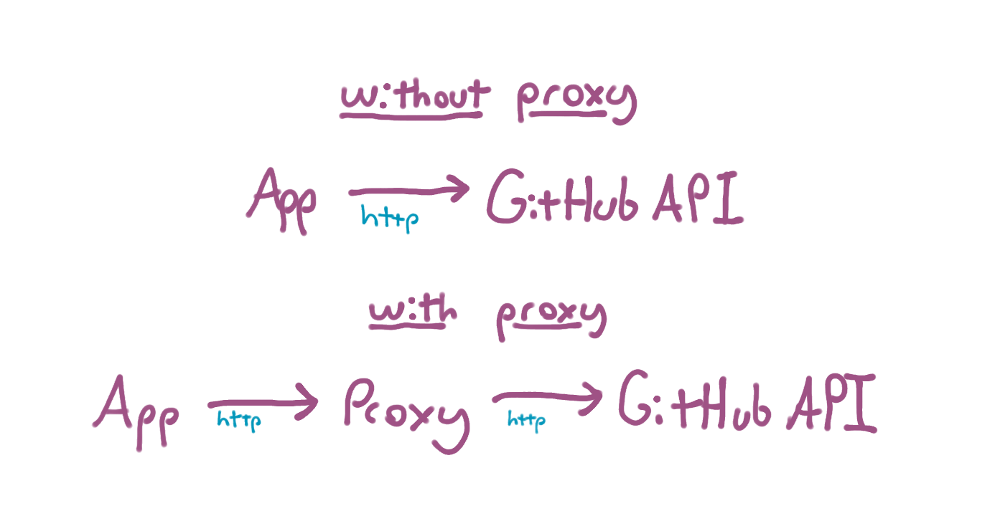
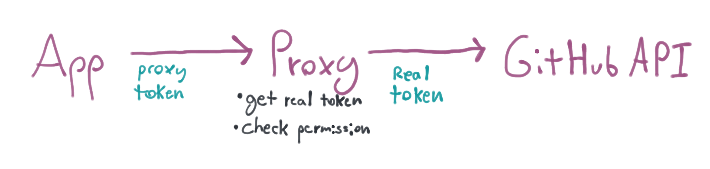
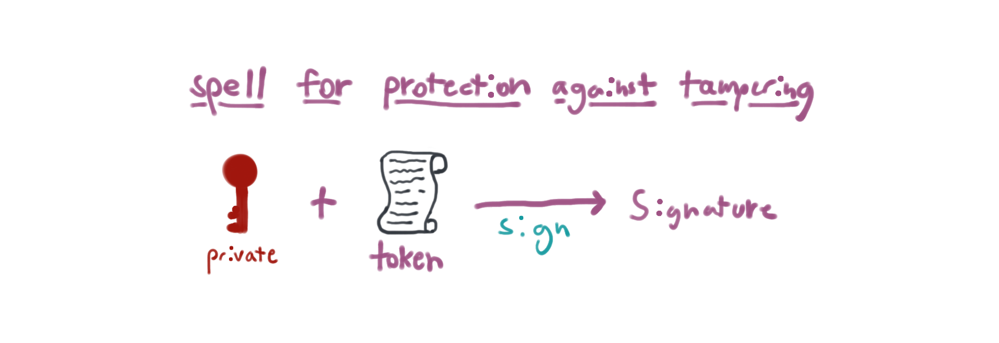
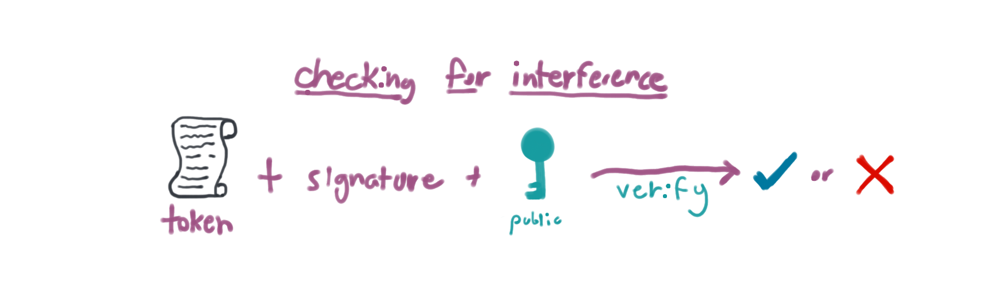

Building a stateless API proxy
Web APIs are lots of fun. However, things can get tricky when it comes to granting other applications access to your data on a specific service.
I ran into this trickiness with the GitHub API. In Google Cloud we have client libraries for about 40 products across 8 programming languages. In order to manage and release these things, we need bots. An army of bots. These bots need access to do things on our repositories.
We want some of these bots to only be able to write comments on things. We want others to be able to create commits, but only on certain branches. We need others to be able to create releases, but nothing else, and so on. This is where things get interesting.
It turns out GitHub's API has extremely coarse access control on API tokens. For example, imagine if you wanted to write an editor plug-in to turn your Gists into easily-accessible snippets in your editor. People would have to grant your plug-in write access even though it only really needs read access. There's a big Dear GitHub post on the subject, but this is not uncommon - many APIs have permissions systems that don't quite always fit the needs of users.
Back to our army of bots - we'd need to give basically every bot full access to our repositories to do their work. That's a problem! Each token floating around out there represents an attack vector.
So how do you fix this? This is where my idea for a stateless, transparent proxy comes into play. I like to call it a ✨magic✨ proxy. Let's talk a bit about it. This post uses GitHub as an example but you can apply this concept to any web API.
What's a proxy?
Okay but first - what even is a proxy?
Well, a proxy is something that sits between you (or your application) and the thing you're trying to talk to. In this case, an API proxy sits between some program you're writing and the upstream API the application is accessing.

Basically, instead of you (or your application) talking directly to GitHub like this:
examples are using httpie
$ http GET https://api.github.com/gists "Authorization: token OAUTH-TOKEN" HTTP/1.1 200 OK [ { "public": true, "url": "https://api.github.com/gists/f108864f81aa385a6ab034d15d416328", ... } ... ]
You would instead talk to GitHub through the proxy:
$ http GET https://github-proxy.thea.codes/gists "Authorization: token PROXY-TOKEN" HTTP/1.1 200 OK [ { "public": true, "url": "https://api.github.com/gists/f108864f81aa385a6ab034d15d416328", ... } ... ]
Notice that while the request path is the same (/gists) and the response is
the same, the domains are different (github-proxy.thea.codes vs api.github.com) and the value in the Authorization header is different.
This is the proxy at work. The proxy's job is to talk to GitHub on your behalf and functionally behave just like the GitHub API - but - and this is an important but - it does not take your normal GitHub API token in the Authorization header. It takes its own token and uses that to figure out who you are and what you can do with the API. The proxy makes these decisions before talking to the GitHub API.
The Authorization header is where the ✨magic✨ happens.
Let's talk about tokens
So let's step back a second. A GitHub token is an opaque string that looks something like 7e096a6633471a2c967718d4b435f0ecdac5c426. You can create one by following these instructions. When you create a token you assign permissions to that token:

Going back to the example about wanting just read-only access to public and private Gists, you'll notice that GitHub just gives you a single "Gists" permission that grants read and write access. No good.
So what I really want is a token that can read but not write gists. The proxy can issue its own token. It can keep track of the fact that the token is only allowed to read Gists and not write them. When it gets a request for the GitHub API it can check permissions before forwarding the request and the real token to GitHub.

This logic might look something like (in pseudocode):
token_permissions = get_token_permissions(request.token) # token_permissions = ["read"] if "read" in token.permissions and request.method == "GET": return forward_request(request) else: return reject_request(request)
Creating and tracking proxy tokens
Okay, so I know what I want the proxy to do:
- Pretend to be the GitHub API.
- but accept its own custom tokens that limit permissions.
Now the big questions are how do I create the custom tokens and how do I keep track of what permissions they have?
Well, I could create a database and start storing stuff into it. I could just generate a random string for the API key and then store stuff like the real GitHub API token and the permissions in a row in the database. Something like:
| Primary Key (Proxy Token) | Permissions | Real API Key |
|---|---|---|
| c967718d | read | 7e096a663... |
| adf314bc | read,write | 7e096a663... |
But databases are pricey and can require a lot of work. They also add latency - each request to the proxy needs to hit the database to find out about the token.
However, another interesting option is to use public-key cryptography to store all that information in the token itself.
Let's talk about black magic - Cryptography
So before I get into how to use public-key cryptography for the proxy, let's talk about some of the basic and important concepts involved.
From Wikipedia:
Public-key cryptography is a cryptographic system that uses pairs of keys: public keys which may be disseminated widely, and private keys which are known only to the owner.
Okay - so I'll have two keys - public and private.

In such a system, any person can encrypt a message using the receiver's public key, but that encrypted message can only be decrypted with the receiver's private key.
Okay - interesting. So stuff encrypted with the public key (so called ciphertext) can be sent in the clear and only the holder of the private key can decrypt it. So if I encrypt something with my public key then I'm the only one that can decrypt it.

Authentication is also possible. A sender can combine a message with a private key to create a short digital signature on the message. Anyone with the corresponding public key can combine a message, a putative digital signature on it, and the known public key to verify whether the signature was valid, i.e. made by the owner of the corresponding private key.
Okay - so this is super interesting. I could write a note and sign it and verify that no one messed with it.

You might wonder why I'm choosing to use asymmetric cryptography here instead of symmetric cryptography. While this approach is more complex, it does allow for the users of the proxy to inspect their tokens. We can add additional information such as issue time, expiration, and more. This turned out to be really useful in practice.
Alright, I have all the spells I need to cast to make the proxy tokens. Let's talk about the right way to cast them.
The format of a stateless token
Okay, so before I apply the cryptography spells I need to figure out the content of the token. The token basically needs to say "this token can do these things with this github account". Just like the database option, the token therefore needs this information at minimum:
- The set of permissions.
- The github token to use once permissions are validated.
So I could imagine writing a simple text document that looks like this:
real token: 7e096a6633471a2c967718d4b435f0ecdac5c426 permissions: read
But I want it to be machine readable so I'll use JSON:
{ "real_token": "7e096a6633471a2c967718d4b435f0ecdac5c426", "permissions": ["read"] }
Securing the real key
Cool. Of course I can't just hand this token as-is to the thing that's talking to the proxy. The real token is right there in plaintext. The app or whatever could just pluck the real token out of the proxy token and bypass the proxy! What I need to do is protect it so that only the proxy can read it.
Let's cast the first spell. ✨
Remember what Wikipedia taught us about public-key cryptography:
In such a system, any person can encrypt a message using the receiver's public key, but that encrypted message can only be decrypted with the receiver's private key.
Perfect!

To prepare for this spell (and subsequent ones), I'll need a public/private key pair. You can make one with openssl:
$ openssl genpkey -algorithm RSA -out private.pem -pkeyopt rsa_keygen_bits:2048 $ openssl rsa -in private.pem -outform PEM -pubout -out public.pem
Note: Past this point, the OpenSSL commands are only for illustrative purposes. OpenSSL's command-line interface is fraught with danger at best. Also, you can read more about generating RSA pairs here.
Okay. Now that I have a private and public key for the proxy I can secure the real token. To do this, I'll encrypted the real token with the public key. This means only my private key can decrypt it. Since the proxy keeps the private key, well, private, only the proxy itself can decrypt the real API token.
Here's what encrypting the key looks like with OpenSSL on the command-line:
$ REAL_TOKEN="7e096a6633471a2c967718d4b435f0ecdac5c426" $ ENCRYPTED_TOKEN=$(echo "${REAL_TOKEN}" | openssl rsautl -encrypt -inkey public.pem -pubin | base64) $ echo "${ENCRYPTED_TOKEN}" aR5PGrONkL8gCnymVu/JpbGFr6LySmkfP5XwTdjSqvM7rPKKh8kBY0CV4KPGq1Axf77AinNGrNrwGq85VRkK96v7vZHBFR23qD1xVflm+BksFAeFmakgMb0XoqFLVtEQEJ6r8Iw8f8D0dInSJ7al3ZILntslVInTNmKBwYo5pJebq41TLd7HPUVsDxw6KbULl/TGeOA79BW9E3DzWX60linHb0UTE+SFuHPDJxMXUL8YXBav/+8OrRmH3n4CJIEmjhQd4GoZ2pUtjfzMCXGIikpZ3qld2/KWazoh6mghxz5RNRbKcGhJSWAz4+JHu0712UEWmk7qeS9n98VvU8lQKA==
Or with Python using the cryptography library:
import base64 import pathlib from cryptography.hazmat import backends from cryptography.hazmat.primitives import hashes from cryptography.hazmat.primitives import serialization from cryptography.hazmat.primitives.asymmetric import padding backend = backends.default_backend() padding = padding.OAEP( mgf=padding.MGF1( algorithm=hashes.SHA256() ), algorithm=hashes.SHA256(), label=None ) public_key_bytes = pathlib.Path("public.pem").read_bytes() public_key = serialization.load_pem_public_key( public_key_bytes, backend=backend ) real_token = "7e096a6633471a2c967718d4b435f0ecdac5c426" encrypted_token_bytes = public_key.encrypt( real_token.encode("utf-8"), padding) encrypted_token = base64.b64encode(encrypted_token_bytes) print(encrypted_token.decode("utf-8")) # aR5PGrONkL8gCnymVu/JpbGFr6LySmkfP5XwTdjSqvM7rPKKh8kBY0CV4KPGq1Axf77AinNGrNrwGq85VRkK96v7vZHBFR23qD1xVflm+BksFAeFmakgMb0XoqFLVtEQEJ6r8Iw8f8D0dInSJ7al3ZILntslVInTNmKBwYo5pJebq41TLd7HPUVsDxw6KbULl/TGeOA79BW9E3DzWX60linHb0UTE+SFuHPDJxMXUL8YXBav/+8OrRmH3n4CJIEmjhQd4GoZ2pUtjfzMCXGIikpZ3qld2/KWazoh6mghxz5RNRbKcGhJSWAz4+JHu0712UEWmk7qeS9n98VvU8lQKA==
The output of encryption is binary data so base64 encoding is used to turn it into something easier to deal with.
Okay. So I now have an encrypted real token. Now I can update the proxy token to include that instead of the plaintext real token.
{ "enc_real_token": "aR5PGrONkL8gCnymVu/JpbGFr6LySmkfP5XwTdjSqvM7rPKKh8kBY0CV4KPGq1Axf77AinNGrNrwGq85VRkK96v7vZHBFR23qD1xVflm+BksFAeFmakgMb0XoqFLVtEQEJ6r8Iw8f8D0dInSJ7al3ZILntslVInTNmKBwYo5pJebq41TLd7HPUVsDxw6KbULl/TGeOA79BW9E3DzWX60linHb0UTE+SFuHPDJxMXUL8YXBav/+8OrRmH3n4CJIEmjhQd4GoZ2pUtjfzMCXGIikpZ3qld2/KWazoh6mghxz5RNRbKcGhJSWAz4+JHu0712UEWmk7qeS9n98VvU8lQKA==", "permissions": ["read"] }
When the proxy gets the proxy token it can use the private key to decrypt the token.

Here's an example using the command-line:
$ REAL_TOKEN=$(echo "${ENCRYPTED_TOKEN}" | base64 -D | openssl rsautl -decrypt -inkey private.pem) $ echo "${REAL_TOKEN}"" 7e096a6633471a2c967718d4b435f0ecdac5c426
Or with Python:
import base64 import pathlib from cryptography.hazmat import backends from cryptography.hazmat.primitives import hashes from cryptography.hazmat.primitives import serialization from cryptography.hazmat.primitives.asymmetric import padding backend = backends.default_backend() padding = padding.OAEP( mgf=padding.MGF1( algorithm=hashes.SHA256() ), algorithm=hashes.SHA256(), label=None ) private_key_bytes = pathlib.Path("private.pem").read_bytes() private_key = serialization.load_pem_private_key( private_key_bytes, password=None, backend=backend ) encrypted_token = "..." # replace with your encrypted token. encrypted_token_bytes = base64.b64decode(encrypted_token) real_token = private_key.decrypt( encrypted_token_bytes, padding).decode("utf-8") print(real_token) # 7e096a6633471a2c967718d4b435f0ecdac5c426
Once again I'm using base64 here - but in reverse to decode the encoded token before passing its binary data to openssl.
Great. Okay - so at this point I have the ability to create a proxy token that holds the real API token but makes it inaccessible to anyone but the proxy. I'm almost ready. However, there's a problem. The permissions are part of the token, too! Someone could just edit my proxy token and add new permissions. Yikes!
Preventing tampering
Let's once again remember what our wise teacher, Wikipedia, told us about public-key cryptography:
A sender can combine a message with a private key to create a short digital signature on the message. Anyone with the corresponding public key can combine a message, a putative digital signature on it, and the known public key to verify whether the signature was valid, i.e. made by the owner of the corresponding private key.
So I could sign the proxy token with my private key and if anyone messed with the contents then the signature would be invalid. This is perfect.

So for the next spell I'm going to take the token and send it through OpenSSL to get a signature for it.
Here's what getting the signature looks like with bash:
$ TOKEN_SIGNATURE=$(openssl dgst -sha256 -sign private.pem proxy-token.json | base64) $ echo "${TOKEN_SIGNATURE}" Tq5G2ZRfxy9+TiVcHU5+RY48CW43UyEDuc2RUtDpUZa16oae0zYXDplwnprqgbZfISs2EC7yCONdFfzdatGpc2Ks4sOmccZhqyUTqmNPADRQVfldawn/GymxviLLbwxHf3hML3KtP/tpEMC2zuygGmnnddbYsTBHy9/TkZFouUSH33CJbVcy4X7S1wtdTiaB7Wsp4ukcd486QXoDWngWKwpu77+uSU9aGAGNvRm2+pqiAih2UxV12FpsJrIQo2y7nMPaNd8CE1ClTt7bsIHp96qHoIE4azWvyuEPy4SfBUHcZS6XiQ/ogYs2iSYryiWdB8OxZdR4YB2QWRQXyNicZw==
It's easier to do this on the command-line if the thing you're trying to sign is in a file. So I just saved the token above as
proxy-token.json.
And with Python:
import base64 import pathlib from cryptography.hazmat import backends from cryptography.hazmat.primitives import hashes from cryptography.hazmat.primitives import serialization from cryptography.hazmat.primitives.asymmetric import padding backend = backends.default_backend() padding = padding.PSS( mgf=padding.MGF1(hashes.SHA256()), salt_length=padding.PSS.MAX_LENGTH ) private_key_bytes = pathlib.Path("private.pem").read_bytes() private_key = serialization.load_pem_private_key( private_key_bytes, password=None, backend=backend ) # replace enc_real_token with your encrypted token. proxy_token = """ { "enc_real_token": "...", "permissions": ["read"] } """ signature_bytes = private_key.sign( proxy_token.encode("utf-8"), padding, hashes.SHA256()) signature = base64.b64encode(signature_bytes) print(signature.decode("utf-8")) # Tq5G2ZRfxy9+TiVcHU5+RY48CW43UyEDuc2RUtDpUZa16oae0zYXDplwnprqgbZfISs2EC7yCONdFfzdatGpc2Ks4sOmccZhqyUTqmNPADRQVfldawn/GymxviLLbwxHf3hML3KtP/tpEMC2zuygGmnnddbYsTBHy9/TkZFouUSH33CJbVcy4X7S1wtdTiaB7Wsp4ukcd486QXoDWngWKwpu77+uSU9aGAGNvRm2+pqiAih2UxV12FpsJrIQo2y7nMPaNd8CE1ClTt7bsIHp96qHoIE4azWvyuEPy4SfBUHcZS6XiQ/ogYs2iSYryiWdB8OxZdR4YB2QWRQXyNicZw==
Alright, now I've got a signature. I can send both the the proxy token and its signature to the proxy and the proxy can ensure that the token hasn't been tampered with.

In terms of what it looks like to actually send it, I could do something like this:
$ PROXY_TOKEN=$(cat proxy-token.json | base64) $ http GET https://github-proxy.thea.codes/gists "X-Proxy-Token: ${PROXY_TOKEN}" "X-Proxy-Token-Signature: ${TOKEN_SIGNATURE}"
But it turns out there's already a well-defined standard for this - JSON Web Tokens!
JWTs for proxy tokens
JWT can sound scary but I'm basically already doing 90% of it at this point. A JWT is just a way of encapsulating some data so that it can be verified. It's made of three parts: a header, a payload, and a signature. I've already got the payload and most of signature part down. I just need to put it all in the right format. Luckily I don't have to do all this myself, I can use a library like PyJWT:
import pathlib import jwt private_key = pathlib.Path("private.pem").read_text() payload = { "enc_real_token": "aR5PGrONkL8gCnymVu/JpbGFr6LySmkfP5XwTdjSqvM7rPKKh8kBY0CV4KPGq1Axf77AinNGrNrwGq85VRkK96v7vZHBFR23qD1xVflm+BksFAeFmakgMb0XoqFLVtEQEJ6r8Iw8f8D0dInSJ7al3ZILntslVInTNmKBwYo5pJebq41TLd7HPUVsDxw6KbULl/TGeOA79BW9E3DzWX60linHb0UTE+SFuHPDJxMXUL8YXBav/+8OrRmH3n4CJIEmjhQd4GoZ2pUtjfzMCXGIikpZ3qld2/KWazoh6mghxz5RNRbKcGhJSWAz4+JHu0712UEWmk7qeS9n98VvU8lQKA==", "permissions": ["read"] } token = jwt.encode(payload, private_key, algorithm="RS256") print(token.decode("utf-8"))
That script will produce a JWT like this:
eyJ0eXAiOiJKV1QiLCJhbGciOiJSUzI1NiJ9.eyJlbmNfcmVhbF90b2tlbiI6ImFSNVBHck9Oa0w4Z0NueW1WdS9KcGJHRnI2THlTbWtmUDVYd1RkalNxdk03clBLS2g4a0JZMENWNEtQR3ExQXhmNzdBaW5OR3JOcndHcTg1VlJrSzk2djd2WkhCRlIyM3FEMXhWZmxtK0Jrc0ZBZUZtYWtnTWIwWG9xRkxWdEVRRUo2cjhJdzhmOEQwZEluU0o3YWwzWklMbnRzbFZJblRObUtCd1lvNXBKZWJxNDFUTGQ3SFBVVnNEeHc2S2JVTGwvVEdlT0E3OUJXOUUzRHpXWDYwbGluSGIwVVRFK1NGdUhQREp4TVhVTDhZWEJhdi8rOE9yUm1IM240Q0pJRW1qaFFkNEdvWjJwVXRqZnpNQ1hHSWlrcFozcWxkMi9LV2F6b2g2bWdoeHo1Uk5SYktjR2hKU1dBejQrSkh1MDcxMlVFV21rN3FlUzluOThWdlU4bFFLQT09IiwicGVybWlzc2lvbnMiOlsicmVhZCJdfQ.GAxcONwT7M4Gvk_OGEuQKHqMlRDGOxDixkEMlC-tYlDIJEjkDkW_YLY4oBiKEtGwmn97wdvXsnds9eheFt3SO4oOPfkYYHbJRQxRZnhhDRgY_CkX9_uYjeaLB-ttNoiSTYYMGaCcxP8VsNc06jS5S7-1RXGJ30gK_gwwhSNHexn5tppAFDDzoD4g-0vWXBx3i1mLanyFQvY1iMGV0JYg1Y48M6Bx8wClYeGGq6lXy6h7H-NgisJDl8pr-C_hOu_mmsLhgM2fEiDKa_2JE9ToWtv2v9inZ4YbiAmJJd-6TIv1jeLJinzVjxgEMesiDBVm1l0pSZ7R2c5tgOxkrvGE4g
If you want, you can drop that into the debugger at jwt.io to see the token's content. The example one looks like this:
header = { "typ": "JWT", "alg": "RS256" } payload = { "enc_real_token": "aR5PGrONkL8gCnymVu/JpbGFr6LySmkfP5XwTdjSqvM7rPKKh8kBY0CV4KPGq1Axf77AinNGrNrwGq85VRkK96v7vZHBFR23qD1xVflm+BksFAeFmakgMb0XoqFLVtEQEJ6r8Iw8f8D0dInSJ7al3ZILntslVInTNmKBwYo5pJebq41TLd7HPUVsDxw6KbULl/TGeOA79BW9E3DzWX60linHb0UTE+SFuHPDJxMXUL8YXBav/+8OrRmH3n4CJIEmjhQd4GoZ2pUtjfzMCXGIikpZ3qld2/KWazoh6mghxz5RNRbKcGhJSWAz4+JHu0712UEWmk7qeS9n98VvU8lQKA==", "permissions": [ "read" ] }
Which is exactly what I put in. :)
Verifying the token
Okay - I have my proxy token and its signature all wrapped up in a warm, gentle JWT. I'm sending that JWT to the proxy. But, how do I verify the JWT on the proxy side?
Remember from before:
Anyone with the corresponding public key can combine a message, a putative digital signature on it, and the known public key to verify whether the signature was valid, i.e. made by the owner of the corresponding private key.
Cool, so this is our final spell. We'll take the signature, the token, and the public key and verify that the signature is correct.

We're going to do some hand-waving here because JWT lets us do that. It implements this magic for us. So we can use jwt.decode.
import pathlib import jwt public_key = pathlib.Path("public.pem").read_text() # The proxy would get this value from the actual request. It's hardcoded # here for example purposes. unverified_token = "eyJ0eXAiOiJKV1QiLCJhbGciOiJSUzI1NiJ9.eyJlbmNfcmVhbF90b2tlbiI6ImFSNVBHck9Oa0w4Z0NueW1WdS9KcGJHRnI2THlTbWtmUDVYd1RkalNxdk03clBLS2g4a0JZMENWNEtQR3ExQXhmNzdBaW5OR3JOcndHcTg1VlJrSzk2djd2WkhCRlIyM3FEMXhWZmxtK0Jrc0ZBZUZtYWtnTWIwWG9xRkxWdEVRRUo2cjhJdzhmOEQwZEluU0o3YWwzWklMbnRzbFZJblRObUtCd1lvNXBKZWJxNDFUTGQ3SFBVVnNEeHc2S2JVTGwvVEdlT0E3OUJXOUUzRHpXWDYwbGluSGIwVVRFK1NGdUhQREp4TVhVTDhZWEJhdi8rOE9yUm1IM240Q0pJRW1qaFFkNEdvWjJwVXRqZnpNQ1hHSWlrcFozcWxkMi9LV2F6b2g2bWdoeHo1Uk5SYktjR2hKU1dBejQrSkh1MDcxMlVFV21rN3FlUzluOThWdlU4bFFLQT09IiwicGVybWlzc2lvbnMiOlsicmVhZCJdfQ.GAxcONwT7M4Gvk_OGEuQKHqMlRDGOxDixkEMlC-tYlDIJEjkDkW_YLY4oBiKEtGwmn97wdvXsnds9eheFt3SO4oOPfkYYHbJRQxRZnhhDRgY_CkX9_uYjeaLB-ttNoiSTYYMGaCcxP8VsNc06jS5S7-1RXGJ30gK_gwwhSNHexn5tppAFDDzoD4g-0vWXBx3i1mLanyFQvY1iMGV0JYg1Y48M6Bx8wClYeGGq6lXy6h7H-NgisJDl8pr-C_hOu_mmsLhgM2fEiDKa_2JE9ToWtv2v9inZ4YbiAmJJd-6TIv1jeLJinzVjxgEMesiDBVm1l0pSZ7R2c5tgOxkrvGE4g" try: token = jwt.decode(unverified_token, public_key, algorithms='RS256') except jwt.exceptions.InvalidSignatureError: print("Invalid signature!") raise print(token) permissions = token["permissions"] real_token = decrypt_token(token["enc_real_token"])
Proxying requests
Once the token is verified, the proxy can grab the permissions and decode the real token (using the code from the section on securing the real token). Then the proxy can then check the permissions of the request. For example, this token only allows read so we should reject anything other than GET requests
if "write" not in token["permissions"]: if request.method == "GET": return proxy_request(request, real_token) else: return reject_request(request)
But these permissions can of course be as flexible as you want since you're in control of the proxy. You can define all sorts of custom ACLs. At Google, we use a combination of regular expressions and HTTP methods such as:
[
"GET /gists/.*",
"POST /orgs/googleapis/repos/(.+?)/pulls/(.+?)/comments"
]
Once permissions are verified then the request can be proxied over to GitHub using the real API token. But, if the app is trying to do something it's not allowed to do then the request can be rejected.
Tying it all together
This is really cool. I now have a token that:
- Contains the real API token, but only the proxy can read it.
- Contains the permissions, but they can't be tampered with.
- Can be verified using the proxy's public key if someone wanted to.
- Can even be introspected by users of the proxy to see what permissions it has.
Seems pretty magical to me! ✨
There's actually a full implementation of this idea over at https://github.com/theacodes/magic-github-proxy. It's a little under documented, but with this post you should hopefully be well equipped to understand how it works.
Gotchas
Okay, cryptography isn't actual magic, but it is just as dangerous. You should always do security in depth. You should always consult a security engineer. Just because these tokens are more limited in consequence doesn't mean they should be treated any less carefully than a real token.
Another big drawback to this approach is that it's basically impossible to revoke a proxy token without some more thinking. There's a few ways you could think of doing it such as revoking the real token (which invalidates all proxy tokens made from that real token), revoking the proxy's private key (invalidates every token), or by managing multiple private/public key pairs (see Certificate authority).
Of course, there's a lot I left out. JWTs can actually contain lots of useful claims, such as an expiration time, that can be used by both the proxy and the app. You can also use more sophisticated algorithms such as Elliptic-curve cryptography for better CPU and space efficiency. There's lots of places to go from here!
Read more
This post is based on a ton of research and prior art. You can take a look at some of these articles and resources to learn more about how I came up with this idea.